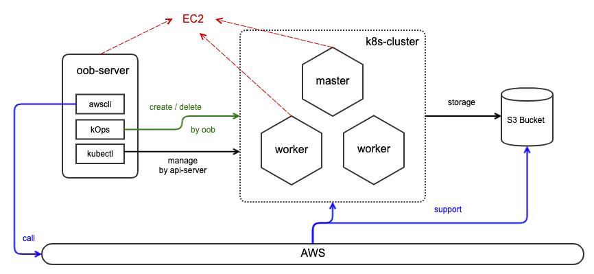
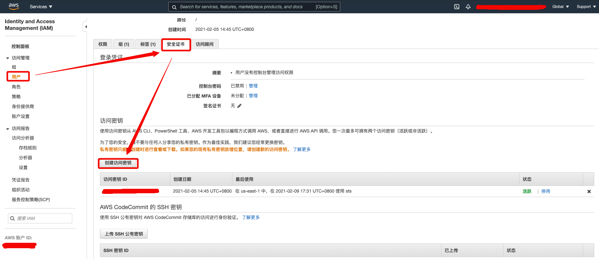
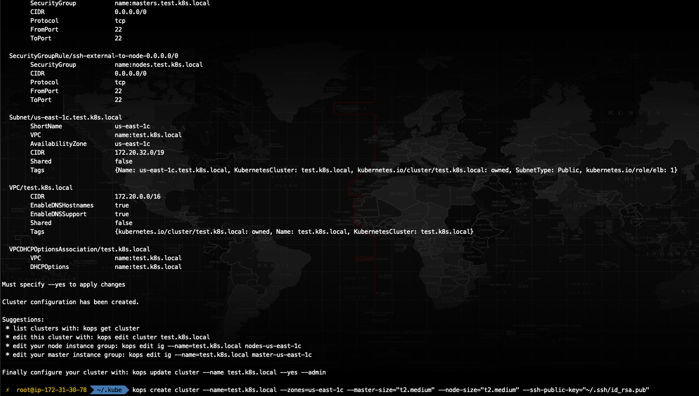
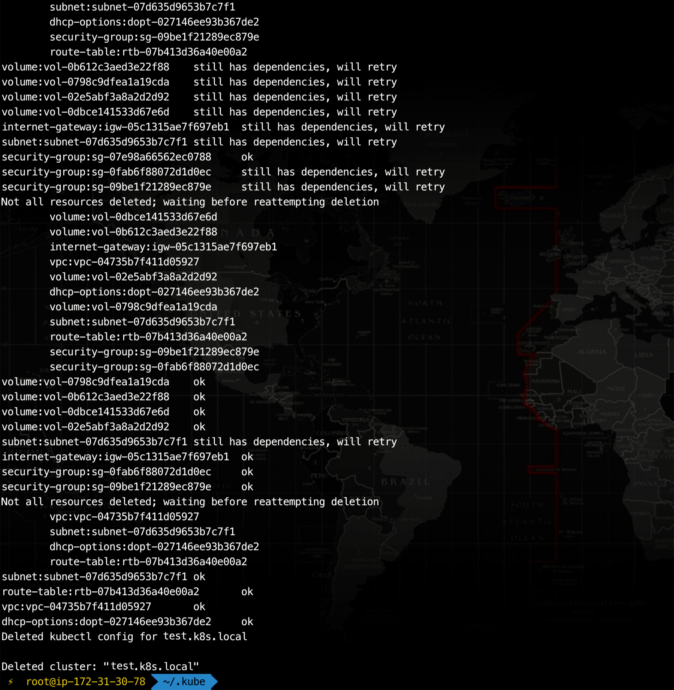
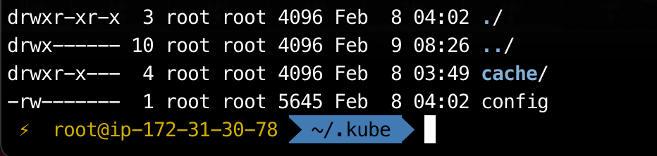

<!DOCTYPE HTML>
<html lang="zh-CN">


<head>
    <meta charset="utf-8">
    <meta name="keywords" content="利用 kOps 在 AWS 部署 k8s 集群, EXP BLOG IT SHARE">
    <meta name="description" content="EXP 技术博客">
    <meta http-equiv="X-UA-Compatible" content="IE=edge">
    <meta name="viewport" content="width=device-width, initial-scale=1.0, user-scalable=no">
    <meta name="renderer" content="webkit|ie-stand|ie-comp">
    <meta name="mobile-web-app-capable" content="yes">
    <meta name="format-detection" content="telephone=no">
    <meta name="apple-mobile-web-app-capable" content="yes">
    <meta name="apple-mobile-web-app-status-bar-style" content="black-translucent">
    <!-- Global site tag (gtag.js) - Google Analytics -->


    <title>利用 kOps 在 AWS 部署 k8s 集群 | 眈眈探求</title>
    <link rel="icon" type="image/png" href="/favicon.png">

    <link rel="stylesheet" type="text/css" href="/libs/awesome/css/all.css">
    <link rel="stylesheet" type="text/css" href="/libs/materialize/materialize.min.css">
    <link rel="stylesheet" type="text/css" href="/libs/aos/aos.css">
    <link rel="stylesheet" type="text/css" href="/libs/animate/animate.min.css">
    <link rel="stylesheet" type="text/css" href="/libs/lightGallery/css/lightgallery.min.css">
    <link rel="stylesheet" type="text/css" href="/css/matery.css">
    <link rel="stylesheet" type="text/css" href="/css/my.css">

    <script src="/libs/jquery/jquery.min.js"></script>

<meta name="generator" content="Hexo 5.1.1"><link rel="alternate" href="/atom.xml" title="眈眈探求" type="application/atom+xml">
<link rel="stylesheet" href="/css/prism-tomorrow.css" type="text/css">
<link rel="stylesheet" href="/css/prism-line-numbers.css" type="text/css"></head>


<body>
    <header class="navbar-fixed">
    <nav id="headNav" class="bg-color nav-transparent">
        <div id="navContainer" class="nav-wrapper container">
            <div class="brand-logo">
                <a href="/" class="waves-effect waves-light">
                    
                    
                    
                    <span class="logo-span">眈眈探求</span>
                </a>
            </div>
            

<a href="#" data-target="mobile-nav" class="sidenav-trigger button-collapse"><i class="fas fa-bars"></i></a>
<ul class="right nav-menu">
  
  <li class="hide-on-med-and-down nav-item">
    
    <a href="/" class="waves-effect waves-light">

      
      <i class="fas fa-home" style="zoom: 0.6;"></i>
      
      <span>首页</span>
      <i class="fas fa-chevron-down" aria-hidden="true" style="zoom: 0.6;"></i>
    </a>
    <ul class="sub-nav menus_item_child ">
      
      <li>
        <a href="/tags">
          
          <i class="fas fa-tags" style="margin-top: -20px; zoom: 0.6;"></i>
          
          <span>标签</span>
        </a>
      </li>
      
      <li>
        <a href="/categories">
          
          <i class="fas fa-bookmark" style="margin-top: -20px; zoom: 0.6;"></i>
          
          <span>分类</span>
        </a>
      </li>
      
      <li>
        <a href="/archives">
          
          <i class="fas fa-archive" style="margin-top: -20px; zoom: 0.6;"></i>
          
          <span>归档</span>
        </a>
      </li>
      
    </ul>
    
  </li>
  
  <li class="hide-on-med-and-down nav-item">
    
    <a target="_blank" rel="noopener" href="https://lyy289065406.github.io/site-package/" class="waves-effect waves-light">
      
      <i class="fas fa-cogs" style="zoom: 0.6;"></i>
      
      <span>站长工具</span>
    </a>
    
  </li>
  
  <li class="hide-on-med-and-down nav-item">
    
    <a target="_blank" rel="noopener" href="https://lyy289065406.github.io/threat-broadcast/" class="waves-effect waves-light">
      
      <i class="fas fa-bug" style="zoom: 0.6;"></i>
      
      <span>威胁情报</span>
    </a>
    
  </li>
  
  <li class="hide-on-med-and-down nav-item">
    
    <a href="/" class="waves-effect waves-light">

      
      <i class="fas fa-list" style="zoom: 0.6;"></i>
      
      <span>解题报告</span>
      <i class="fas fa-chevron-down" aria-hidden="true" style="zoom: 0.6;"></i>
    </a>
    <ul class="sub-nav menus_item_child ">
      
      <li>
        <a target="_blank" rel="noopener" href="https://github.com/lyy289065406/CTF-Solving-Reports/">
          
          <i class="fas fa-file-code" style="margin-top: -20px; zoom: 0.6;"></i>
          
          <span>CTF 解题报告</span>
        </a>
      </li>
      
      <li>
        <a href="https://exp-blog.com/algorithm/poj-shi-ti-fen-lei/">
          
          <i class="fas fa-graduation-cap" style="margin-top: -20px; zoom: 0.6;"></i>
          
          <span>POJ 解题报告</span>
        </a>
      </li>
      
    </ul>
    
  </li>
  
  <li class="hide-on-med-and-down nav-item">
    
    <a href="/about" class="waves-effect waves-light">
      
      <i class="fas fa-user-circle" style="zoom: 0.6;"></i>
      
      <span>关于</span>
    </a>
    
  </li>
  
  <li class="hide-on-med-and-down nav-item">
    
    <a href="/friends" class="waves-effect waves-light">
      
      <i class="fas fa-gg" style="zoom: 0.6;"></i>
      
      <span>友情链接</span>
    </a>
    
  </li>
  
  <li>
    <a href="#searchModal" class="modal-trigger waves-effect waves-light">
      <i id="searchIcon" class="fas fa-search" title="搜索" style="zoom: 0.85;"></i>
    </a>
  </li>
</ul>


<div id="mobile-nav" class="side-nav sidenav">

    <div class="mobile-head bg-color">
        
        
        
        <div class="logo-name">眈眈探求</div>
        <div class="logo-desc">
            
            EXP 技术博客
            
        </div>
    </div>

    

    <ul class="menu-list mobile-menu-list">
        
        <li class="m-nav-item">
	  
		<a href="javascript:;">
			
				<i class="fa-fw fas fa-home"></i>
			
			首页
			<span class="m-icon"><i class="fas fa-chevron-right"></i></span>
		</a>
            <ul  style="background:  ;" >
              
                <li>

                  <a href="/tags " style="margin-left:75px">
				  
				   <i class="fa fas fa-tags" style="position: absolute;left:50px" ></i>
			      
		          <span>标签</span>
                  </a>
                </li>
              
                <li>

                  <a href="/categories " style="margin-left:75px">
				  
				   <i class="fa fas fa-bookmark" style="position: absolute;left:50px" ></i>
			      
		          <span>分类</span>
                  </a>
                </li>
              
                <li>

                  <a href="/archives " style="margin-left:75px">
				  
				   <i class="fa fas fa-archive" style="position: absolute;left:50px" ></i>
			      
		          <span>归档</span>
                  </a>
                </li>
              
            </ul>
          
        </li>
        
        <li class="m-nav-item">
	  
		<a target="_blank" rel="noopener" href="https://lyy289065406.github.io/site-package/" class="waves-effect waves-light">
			
			    <i class="fa-fw fas fa-cogs"></i>
			
			站长工具
		</a>
          
        </li>
        
        <li class="m-nav-item">
	  
		<a target="_blank" rel="noopener" href="https://lyy289065406.github.io/threat-broadcast/" class="waves-effect waves-light">
			
			    <i class="fa-fw fas fa-bug"></i>
			
			威胁情报
		</a>
          
        </li>
        
        <li class="m-nav-item">
	  
		<a href="javascript:;">
			
				<i class="fa-fw fas fa-list"></i>
			
			解题报告
			<span class="m-icon"><i class="fas fa-chevron-right"></i></span>
		</a>
            <ul  style="background:  ;" >
              
                <li>

                  <a target="_blank" rel="noopener" href="https://github.com/lyy289065406/CTF-Solving-Reports/ " style="margin-left:75px">
				  
				   <i class="fa fas fa-file-code" style="position: absolute;left:50px" ></i>
			      
		          <span>CTF 解题报告</span>
                  </a>
                </li>
              
                <li>

                  <a href="https://exp-blog.com/algorithm/poj-shi-ti-fen-lei/ " style="margin-left:75px">
				  
				   <i class="fa fas fa-graduation-cap" style="position: absolute;left:50px" ></i>
			      
		          <span>POJ 解题报告</span>
                  </a>
                </li>
              
            </ul>
          
        </li>
        
        <li class="m-nav-item">
	  
		<a href="/about" class="waves-effect waves-light">
			
			    <i class="fa-fw fas fa-user-circle"></i>
			
			关于
		</a>
          
        </li>
        
        <li class="m-nav-item">
	  
		<a href="/friends" class="waves-effect waves-light">
			
			    <i class="fa-fw fas fa-gg"></i>
			
			友情链接
		</a>
          
        </li>
        
        
        <li><div class="divider"></div></li>
        <li>
            <a href="https://github.com/lyy289065406/hexo-blog" class="waves-effect waves-light" target="_blank">
                <i class="fab fa-github-square fa-fw"></i>Fork Me
            </a>
        </li>
        
    </ul>
</div>


        </div>

        
            <style>
    .nav-transparent .github-corner {
        display: none !important;
    }

    .github-corner {
        position: absolute;
        z-index: 10;
        top: 0;
        right: 0;
        border: 0;
        transform: scale(1.1);
    }

    .github-corner svg {
        color: #000000;
        fill: #fff;
        height: 64px;
        width: 64px;
    }

    .github-corner:hover .octo-arm {
        animation: a 0.56s ease-in-out;
    }

    .github-corner .octo-arm {
        animation: none;
    }

    @keyframes a {
        0%,
        to {
            transform: rotate(0);
        }
        20%,
        60% {
            transform: rotate(-25deg);
        }
        40%,
        80% {
            transform: rotate(10deg);
        }
    }
</style>

<a href="https://github.com/lyy289065406/hexo-blog" class="github-corner tooltipped hide-on-med-and-down" target="_blank"
   data-tooltip="Fork Me" data-position="left" data-delay="50">
    <svg viewBox="0 0 250 250" aria-hidden="true">
        <path d="M0,0 L115,115 L130,115 L142,142 L250,250 L250,0 Z"></path>
        <path d="M128.3,109.0 C113.8,99.7 119.0,89.6 119.0,89.6 C122.0,82.7 120.5,78.6 120.5,78.6 C119.2,72.0 123.4,76.3 123.4,76.3 C127.3,80.9 125.5,87.3 125.5,87.3 C122.9,97.6 130.6,101.9 134.4,103.2"
              fill="currentColor" style="transform-origin: 130px 106px;" class="octo-arm"></path>
        <path d="M115.0,115.0 C114.9,115.1 118.7,116.5 119.8,115.4 L133.7,101.6 C136.9,99.2 139.9,98.4 142.2,98.6 C133.8,88.0 127.5,74.4 143.8,58.0 C148.5,53.4 154.0,51.2 159.7,51.0 C160.3,49.4 163.2,43.6 171.4,40.1 C171.4,40.1 176.1,42.5 178.8,56.2 C183.1,58.6 187.2,61.8 190.9,65.4 C194.5,69.0 197.7,73.2 200.1,77.6 C213.8,80.2 216.3,84.9 216.3,84.9 C212.7,93.1 206.9,96.0 205.4,96.6 C205.1,102.4 203.0,107.8 198.3,112.5 C181.9,128.9 168.3,122.5 157.7,114.1 C157.9,116.9 156.7,120.9 152.7,124.9 L141.0,136.5 C139.8,137.7 141.6,141.9 141.8,141.8 Z"
              fill="currentColor" class="octo-body"></path>
    </svg>
</a>
        
    </nav>

</header>

    


<div class="bg-cover pd-header post-cover" style="background-image: url('/medias/featureimages/19.jpg')">
    <div class="container" style="right: 0px;left: 0px;">
        <div class="row">
            <div class="col s12 m12 l12">
                <div class="brand">
                    <h1 class="description center-align post-title">利用 kOps 在 AWS 部署 k8s 集群</h1>
                </div>
            </div>
        </div>
    </div>
</div>


<main class="post-container content">

    
    <link rel="stylesheet" href="/libs/tocbot/tocbot.css">
<style>
    #articleContent h1::before,
    #articleContent h2::before,
    #articleContent h3::before,
    #articleContent h4::before,
    #articleContent h5::before,
    #articleContent h6::before {
        display: block;
        content: " ";
        height: 100px;
        margin-top: -100px;
        visibility: hidden;
    }

    #articleContent :focus {
        outline: none;
    }

    .toc-fixed {
        position: fixed;
        top: 64px;
    }

    .toc-widget {
        width: 345px;
        padding-left: 20px;
    }

    .toc-widget .toc-title {
        margin: 35px 0 15px 0;
        padding-left: 17px;
        font-size: 1.5rem;
        font-weight: bold;
        line-height: 1.5rem;
    }

    .toc-widget ol {
        padding: 0;
        list-style: none;
    }

    #toc-content {
        height: calc(100vh - 250px);
        overflow: auto;
    }

    #toc-content ol {
        padding-left: 10px;
    }

    #toc-content ol li {
        padding-left: 10px;
    }

    #toc-content .toc-link:hover {
        color: #42b983;
        font-weight: 700;
        text-decoration: underline;
    }

    #toc-content .toc-link::before {
        background-color: transparent;
        max-height: 25px;

        position: absolute;
        right: 23.5vw;
        display: block;
    }

    #toc-content .is-active-link {
        color: #0a8cca;
    }

    #floating-toc-btn {
        position: fixed;
        right: 15px;
        bottom: 76px;
        padding-top: 15px;
        margin-bottom: 0;
        z-index: 998;
    }

    #floating-toc-btn .btn-floating {
        width: 48px;
        height: 48px;
    }

    #floating-toc-btn .btn-floating i {
        line-height: 48px;
        font-size: 1.4rem;
    }
</style>
<div class="row">
    <div id="main-content" class="col s12 m12 l9">
        <!-- 文章内容详情 -->
<div id="artDetail">
    <div class="card">
        <div class="card-content article-info">
            <div class="row tag-cate">
                <div class="col s7">
                    
                    <div class="article-tag">
                        
                            <a href="/tags/%E5%AE%B9%E5%99%A8/">
                                <span class="chip bg-color">容器</span>
                            </a>
                        
                            <a href="/tags/kubernetes/">
                                <span class="chip bg-color">kubernetes</span>
                            </a>
                        
                            <a href="/tags/k8s/">
                                <span class="chip bg-color">k8s</span>
                            </a>
                        
                            <a href="/tags/kops/">
                                <span class="chip bg-color">kops</span>
                            </a>
                        
                            <a href="/tags/aws/">
                                <span class="chip bg-color">aws</span>
                            </a>
                        
                    </div>
                    
                </div>
                <div class="col s5 right-align">
                    
                    <div class="post-cate">
                        <i class="fas fa-bookmark fa-fw icon-category"></i>
                        
                            <a href="/categories/%E5%AE%B9%E5%99%A8/" class="post-category">
                                容器
                            </a>
                        
                    </div>
                    
                </div>
            </div>

            <div class="post-info">
                
                <div class="post-date info-break-policy">
                    <i class="far fa-calendar-minus fa-fw"></i>发布日期:&nbsp;&nbsp;
                    2021-02-08
                </div>
                

                
                <div class="post-date info-break-policy">
                    <i class="far fa-calendar-check fa-fw"></i>更新日期:&nbsp;&nbsp;
                    2021-02-09
                </div>
                

                
                <div class="info-break-policy">
                    <i class="far fa-file-word fa-fw"></i>文章字数:&nbsp;&nbsp;
                    4.9k
                </div>
                

                
                <div class="info-break-policy">
                    <i class="far fa-clock fa-fw"></i>阅读时长:&nbsp;&nbsp;
                    20 分
                </div>
                

                
                    <div id="busuanzi_container_page_pv" class="info-break-policy">
                        <i class="far fa-eye fa-fw"></i>阅读次数:&nbsp;&nbsp;
                        <span id="busuanzi_value_page_pv"></span>
                    </div>
				
            </div>
        </div>
        <hr class="clearfix">
        <div class="card-content article-card-content">
            <div id="articleContent">
                <h2 id="参数与版本"><a href="#参数与版本" class="headerlink" title="参数与版本"></a>参数与版本</h2><p>本文中涉及的所有工具或参数，如无特殊描述，均与下表相同：</p>
<table>
<thead>
<tr>
<th align="center">条目</th>
<th align="center">参数值/版本号</th>
</tr>
</thead>
<tbody><tr>
<td align="center">kOps</td>
<td align="center">1.19.0</td>
</tr>
<tr>
<td align="center">kubectl</td>
<td align="center">1.19.7</td>
</tr>
<tr>
<td align="center">metrics-server</td>
<td align="center">集群内置</td>
</tr>
<tr>
<td align="center">dashboard</td>
<td align="center">2.0.1</td>
</tr>
<tr>
<td align="center">cluster name</td>
<td align="center">test.k8s.local</td>
</tr>
<tr>
<td align="center">s3 name</td>
<td align="center">test.k8s.local-state</td>
</tr>
<tr>
<td align="center">region</td>
<td align="center">us-east-1</td>
</tr>
<tr>
<td align="center">zone</td>
<td align="center">us-east-1c</td>
</tr>
</tbody></table>
<blockquote>
<p>由于 k8s 更新迭代非常快，而且对版本要求很严格，因此本文主要为了叙述搭建 k8s 集群的方法，涉及到的版本和参数可能在若干年月后就过时了，所以在部署的时候，对于出现版本号和参数的地方一定要格外留意，尽量不要直接复制命令执行，否则最终搭建出来的集群很可能会出现各种兼容性问题。详细可参考《<a target="_blank" rel="noopener" href="https://kubernetes.io/zh/docs/setup/release/version-skew-policy/">Kubernetes 版本及版本偏差支持策略</a>》。</p>
</blockquote>
<h2 id="工具说明"><a href="#工具说明" class="headerlink" title="工具说明"></a>工具说明</h2><table>
<thead>
<tr>
<th align="center">工具</th>
<th align="center">用途</th>
</tr>
</thead>
<tbody><tr>
<td align="center"><a target="_blank" rel="noopener" href="https://aws.amazon.com/cn/">AWS</a></td>
<td align="center">亚马逊云计算平台，类似于阿里云、腾讯云等，可以提供搭建 k8s 集群的云主机、S3 存储桶等资源</td>
</tr>
<tr>
<td align="center"><a target="_blank" rel="noopener" href="https://aws.amazon.com/cn/cli/">awscli</a></td>
<td align="center">AWS 命令行工具，可用于管理 AWS 平台上的授权服务</td>
</tr>
<tr>
<td align="center"><a target="_blank" rel="noopener" href="https://github.com/kubernetes/kops">kOps</a></td>
<td align="center">用于在 AWS 上搭建 k8s 集群的 OOB（out-of-band） 工具，通过配置授权，它可以直接调度 AWS 上的资源，全自动创建并管理一个高可用的 k8s 集群</td>
</tr>
<tr>
<td align="center"><a target="_blank" rel="noopener" href="https://kubernetes.io/docs/tasks/tools/install-kubectl/">kubectl</a></td>
<td align="center">k8s 命令行工具，可用于对 k8s 集群下发命令</td>
</tr>
<tr>
<td align="center"><a target="_blank" rel="noopener" href="https://github.com/kubernetes/kubernetes">kubernetes</a></td>
<td align="center">简称 k8s，可跨多个主机管理容器化的应用程序的开源系统</td>
</tr>
<tr>
<td align="center"><a target="_blank" rel="noopener" href="https://github.com/kubernetes/dashboard">dashboard</a></td>
<td align="center">k8s 的 GUI 仪表板，可选插件</td>
</tr>
<tr>
<td align="center"><a target="_blank" rel="noopener" href="https://github.com/kubernetes-sigs/metrics-server"><del>metrics-server</del></a></td>
<td align="center">用于收集 k8s 集群指标（如 CPU、内存等）的可选插件，因已内置到 k8s 集群，<strong>不再推荐独立安装，避免出现版本兼容性问题</strong></td>
</tr>
</tbody></table>
<p>关于 metrics-server 版本兼容性问题，可以参考《<a target="_blank" rel="noopener" href="https://www.bookstack.cn/read/kubernetes-practice-guide/troubleshooting-cases-schemaerror-when-using-kubectl-apply-or-edit.md">kubectl edit 或者 apply 报 SchemaError</a>》的说明，主要是 metrics-server 使用了新的 openapi-generator，导致生成的 openapi 格式与某些版本的 k8s 有差异，导致 kubectl 在解析 openapi 的 schema 时发生异常，以致只能回滚或重建集群。</p>
<p>因为我们是使用 kOps 安装的集群，为了避免出现版本兼容性问题，以后要安装 metrics-server、dashboard 之类的插件，最好直接通过 <a target="_blank" rel="noopener" href="https://github.com/kubernetes/kops/tree/master/addons">kops/addons</a> 目录指引按需安装。</p>
<h2 id="准备工作：部署-oob-server"><a href="#准备工作：部署-oob-server" class="headerlink" title="准备工作：部署 oob-server"></a>准备工作：部署 oob-server</h2><p>首先大概了解一下部署架构：</p>
<p></p>
<p>如上图，oob-server 是在 AWS 手动申请的一台 EC2 服务器，我们在这台服务器上安装 awscli、kOps、kubectl 工具后，就可以以 OOB（带外管理）方式调度 AWS 的资源（包括 EC2、S3、VPC、LB、安全组等）创建 k8s 集群。</p>
<p>因为 oob-server 不属于集群的一部分，因此在 aws 申请一台低配的机器即可（本文为 2C4G 的 Ubuntu 18.04）。尔后所有操作均在 oob-server 上执行即可，无需登陆 k8s 集群的任何节点。</p>
<h3 id="安装-kubectl"><a href="#安装-kubectl" class="headerlink" title="安装 kubectl"></a>安装 kubectl</h3><p>若了解 k8s 集群的同学可以知道，集群中有一个 kube-apiserver（由 kOps 负责安装），此处所安装的 kubectl 就是其客户端。</p>
<p>安装命令如下：</p>
<pre class="line-numbers language-shell"><code class="language-shell">curl -LO "https://dl.k8s.io/release/$(curl -L -s https://dl.k8s.io/release/stable.txt)/bin/linux/amd64/kubectl"
chmod +x kubectl
mv kubectl /usr/local/bin/<span aria-hidden="true" class="line-numbers-rows"><span></span><span></span><span></span></span></code></pre>
<p>若要下载特定版本，只需把命令中的 <code>$(curl -L -s https://dl.k8s.io/release/stable.txt)</code> 部分替换为指定版本即可。建议一定要去看下当前最新的稳定版是什么，k8s 对版本兼容性是有严格要求的，一旦不匹配集群会跑不起来。</p>
<p>验证安装命令如下：</p>
<pre class="line-numbers language-shell"><code class="language-shell">kubectl version --short --client<span aria-hidden="true" class="line-numbers-rows"><span></span></span></code></pre>
<blockquote>
<p>使用 <code>kubectl version</code> 可同时查看客户端和服务端版本，但现在服务端还没安装，查询会超时，故先查客户端。</p>
</blockquote>
<h3 id="安装-kOps"><a href="#安装-kOps" class="headerlink" title="安装 kOps"></a>安装 kOps</h3><p>安装命令如下：</p>
<pre class="line-numbers language-shell"><code class="language-shell">curl -Lo kops https://github.com/kubernetes/kops/releases/download/$(curl -s https://api.github.com/repos/kubernetes/kops/releases/latest | grep tag_name | cut -d '"' -f 4)/kops-linux-amd64
chmod +x kops
mv kops /usr/local/bin/kops<span aria-hidden="true" class="line-numbers-rows"><span></span><span></span><span></span></span></code></pre>
<p>若要下载特定版本，只需把命令中的 <code>$(curl -s https://api.github.com/repos/kubernetes/kops/releases/latest | grep tag_name | cut -d '"' -f 4)</code> 部分替换为指定版本即可。建议一定要去看下当前最新的稳定版是什么，确保 kOps 支持安装的 k8s 集群版本与前面安装的 kubectl 版本一致。</p>
<blockquote>
<p>关于 kOps 支持安装的 k8s 版本可以参考《<a target="_blank" rel="noopener" href="https://kops.sigs.k8s.io/welcome/releases/">kOps版本和版本控制</a>》。</p>
</blockquote>
<p>验证安装命令如下：</p>
<pre class="line-numbers language-shell"><code class="language-shell">kops version<span aria-hidden="true" class="line-numbers-rows"><span></span></span></code></pre>
<h3 id="安装-awscli"><a href="#安装-awscli" class="headerlink" title="安装 awscli"></a>安装 awscli</h3><p>安装命令如下：</p>
<pre class="line-numbers language-shell"><code class="language-shell">apt-get update
apt-get install awscli<span aria-hidden="true" class="line-numbers-rows"><span></span><span></span></span></code></pre>
<p>验证安装命令如下：</p>
<pre class="line-numbers language-shell"><code class="language-shell">aws<span aria-hidden="true" class="line-numbers-rows"><span></span></span></code></pre>
<p>为了通过命令行执行 aws 控制台的部分功能，需要为其配置你个人 AWS 账号的 AccessKeyID 和 SecretAccessKey 进行授权。</p>
<p>打开 AWS 的 <a target="_blank" rel="noopener" href="https://console.aws.amazon.com/iam/">IAM 控制面板</a>，点击左侧导航栏的【用户】便可找到你自己的个人账号，点击该账号，点击【安全证书】标签，点击【创建访问密钥】，即可得到 AccessKeyID 和 SecretAccessKey。</p>
<blockquote>
<p>这个密钥只是临时用的，下面配置好 kops 用户后记得回来删除掉。</p>
</blockquote>
<p></p>
<p>配置： <code>aws configure</code><br>会提问 4 个问题：</p>
<ul>
<li>AWS Access Key ID: 输入上面生成的 AccessKeyID</li>
<li>AWS Secret Access Key: 输入上面生成的 SecretAccessKey</li>
<li>Default region name: 输入你期望之后 kOps 创建 ec2 实例时应该创建在哪个地区，例如 us-east-1</li>
<li>Default output format: aws 执行结果回显到命令行界面的格式， 默认 text， 建议 json</li>
</ul>
<blockquote>
<p>注意 AWS 关于 <a target="_blank" rel="noopener" href="https://docs.aws.amazon.com/AmazonRDS/latest/UserGuide/Concepts.RegionsAndAvailabilityZones.html">Regions, Availability Zones, and Local Zones</a> 的区别，此处填的是地区 Regions，例如 us-east-1。 后面会要求细化粒度到可用地区 Zones，例如 us-east-1a、us-east-1b、us-east-1c 等</p>
</blockquote>
<h3 id="创建名为-kops-的-IAM-用户"><a href="#创建名为-kops-的-IAM-用户" class="headerlink" title="创建名为 kops 的 IAM 用户"></a>创建名为 kops 的 IAM 用户</h3><p>为了使用 kops 部署集群，还需要为 kops 创建一个 IAM 用户 kops，并分配相应的权限。包括：</p>
<ul>
<li>AmazonEC2FullAccess</li>
<li>AmazonRoute53FullAccess</li>
<li>AmazonS3FullAccess</li>
<li>IAMFullAccess</li>
<li>AmazonVPCFullAccess</li>
</ul>
<p>由于前面 awscli 已经拥有了你的 aws 账号权限，因此可以直接用命令方式创建 kops 用户并为其分配权限：</p>
<pre class="line-numbers language-shell"><code class="language-shell">aws iam create-group --group-name kops
aws iam attach-group-policy --policy-arn arn:aws:iam::aws:policy/AmazonEC2FullAccess --group-name kops
aws iam attach-group-policy --policy-arn arn:aws:iam::aws:policy/AmazonRoute53FullAccess --group-name kops
aws iam attach-group-policy --policy-arn arn:aws:iam::aws:policy/AmazonS3FullAccess --group-name kops
aws iam attach-group-policy --policy-arn arn:aws:iam::aws:policy/IAMFullAccess --group-name kops
aws iam attach-group-policy --policy-arn arn:aws:iam::aws:policy/AmazonVPCFullAccess --group-name kops
aws iam create-user --user-name kops
aws iam add-user-to-group --user-name kops --group-name kops<span aria-hidden="true" class="line-numbers-rows"><span></span><span></span><span></span><span></span><span></span><span></span><span></span><span></span></span></code></pre>
<p>为 kops 用户创建密钥：</p>
<p><code>aws iam create-access-key --user-name kops</code></p>
<blockquote>
<p>创建后，可以在 AWS 的 IAM 控制台 UI 上看到用户 kops。</p>
</blockquote>
<p>此命令会返回 kops 用户的 AccessKeyID 和 SecretAccessKey，现在更新一下 aws 配置：<code>aws configure</code></p>
<p>同样会提问 4 个问题：</p>
<ul>
<li>AWS Access Key ID: 输入上面生成的 kops 用户的 AccessKeyID</li>
<li>AWS Secret Access Key: 输入上面生成的 kops 用户的 SecretAccessKey</li>
<li>Default region name: 保持不变即可</li>
<li>Default output format: 保持不变即可</li>
</ul>
<p>同时把 kops 用户的配置信息写入到 <code>~/.bashrc</code> 环境变量：</p>
<pre class="line-numbers language-shell"><code class="language-shell">echo 'export AWS_ACCESS_KEY_ID=...' >> ~/.bashrc
echo 'export AWS_SECRET_ACCESS_KEY=...' >> ~/.bashrc
echo 'export AWS_REGION=us-east-1' >> ~/.bashrc<span aria-hidden="true" class="line-numbers-rows"><span></span><span></span><span></span></span></code></pre>
<p>最后生成 ssh 密钥：<code>ssh-keygen</code> （会有几个问题，回车到底即可）</p>
<blockquote>
<p>生成的密钥位置为 <code>~/.ssh/</code>，此密钥可用于之后登陆 k8s 集群。</p>
</blockquote>
<h3 id="创建-s3-Bucket"><a href="#创建-s3-Bucket" class="headerlink" title="创建 s3 Bucket"></a>创建 s3 Bucket</h3><p>存储桶用于存储集群数据，其命名格式要求为: <code>&lt;custom_name&gt;.k8s.local-state</code></p>
<p>例如： <code>test.k8s.local-state</code> （注意后缀一个字符都不能改，下文的存储桶名称均以此为示例）</p>
<p>存储桶名称要求全球唯一，如果创建失败了，注意看提示是否名称已经被占用了。</p>
<p>创建命令：</p>
<pre class="line-numbers language-shell"><code class="language-shell">aws s3 mb s3://test.k8s.local-state --region us-east-1 --endpoint-url https://s3.us-east-1.amazonaws.com<span aria-hidden="true" class="line-numbers-rows"><span></span></span></code></pre>
<blockquote>
<p>命令中的 <code>--region</code> 和 <code>--endpoint-url</code> 参数均涉及地区名称，和前面配置 aws 时的 region 名称保持一致即可</p>
</blockquote>
<p>创建成功后，访问 aws <a target="_blank" rel="noopener" href="https://s3.console.aws.amazon.com/s3">s3</a> 可以看到该存储桶。</p>
<p>最后把 s3 的配置信息写入到 <code>~/.bashrc</code> 环境变量：</p>
<pre class="line-numbers language-shell"><code class="language-shell">echo 'export KOPS_STATE_STORE=s3://test.k8s.local-state' >> ~/.bashrc<span aria-hidden="true" class="line-numbers-rows"><span></span></span></code></pre>
<h2 id="创建-k8s-集群"><a href="#创建-k8s-集群" class="headerlink" title="创建 k8s 集群"></a>创建 k8s 集群</h2><p>前面准备工作完成后，即可使用 kOps 创建集群。</p>
<p>生成集群的配置文件：</p>
<pre class="line-numbers language-shell"><code class="language-shell">kops create cluster \
     --name=test.k8s.local \
     --zones=us-east-1c \
     --master-size="t2.medium" \
     --node-size="t2.medium" \
     --ssh-public-key="~/.ssh/id_rsa.pub"<span aria-hidden="true" class="line-numbers-rows"><span></span><span></span><span></span><span></span><span></span><span></span></span></code></pre>
<ul>
<li><code>--name</code> 就是集群名称，固定格式为 <code>&lt;custom_name&gt;.k8s.local</code>， 为了让 kops 创建基于 gossip 的集群，集群的命名需要使用 <code>.k8s.local</code> 作为后缀，同时它可以自动关联到前面的 s3 Bucket 名称 <code>test.k8s.local-state</code> </li>
<li><code>--zones</code> 配置的是【可用地区】，注意 AWS 关于 <a target="_blank" rel="noopener" href="https://docs.aws.amazon.com/AmazonRDS/latest/UserGuide/Concepts.RegionsAndAvailabilityZones.html">Regions, Availability Zones, and Local Zones</a> 的区别，前面配置的是地区 Regions，例如 us-east-1。 现在这里配置的是可用地区 Zones，例如 us-east-1a、us-east-1b、us-east-1c 等</li>
<li><code>--master-size</code> 和 <code>--node-size</code> 指定的都是 ec2 的实例类型，决定实例的硬件配置，是 2c4g 还是 4c8g 等，kOps 创建 k8s 集群时会新建若干个 ec2 实例作为 node 节点，故而需要这个参数。具体的 ec2 类型可参考<a target="_blank" rel="noopener" href="https://aws.amazon.com/cn/ec2/pricing/on-demand/">这里</a></li>
<li><code>--ssh-public-key</code> 就是把当前 kOps 服务器的 ssh 公钥写入 k8s 集群的每一个 node 节点，以便之后可以直接通过 ssh 登陆</li>
</ul>
<p>create 命令执行成功后, 会提示执行 <code>kops update cluster --name test.k8s.local --yes --admin</code> 命令正式创建集群，但这里先不创建。</p>
<p></p>
<p>我们需要调整集群的配置文件：<code>kops edit cluster test.k8s.local</code></p>
<p>v1.19.7 版本生成的集群配置文件如下，这里主要修改两处：</p>
<ul>
<li>修改 <code>kubelet.anonymousAuth: true</code>: 因为搭建的是测试用的集群，避免认证麻烦，这里把匿名打开</li>
<li>追加 <code>metricsServer.enabled: true</code>: <a target="_blank" rel="noopener" href="https://github.com/kubernetes-sigs/metrics-server">metrics-server</a> 主要用于收集 cpu 内存等信息给 kubernetes-dashboard，但是官方不再推荐安装这个插件，主要是该插件与 kube-apiserver 有版本冲突（见《<a target="_blank" rel="noopener" href="https://www.bookstack.cn/read/kubernetes-practice-guide/troubleshooting-cases-schemaerror-when-using-kubectl-apply-or-edit.md">kubectl edit 或者 apply 报 SchemaError</a>》），故而直接将其内置，并推荐使用开关方式激活这个插件，详见  <a target="_blank" rel="noopener" href="https://github.com/kubernetes/kops/blob/master/addons/metrics-server/README.md">kops/addons/metrics-server</a></li>
</ul>
<pre class="line-numbers language-yaml"><code class="language-yaml"><span class="token comment" spellcheck="true"># Please edit the object below. Lines beginning with a '#' will be ignored,</span>
<span class="token comment" spellcheck="true"># and an empty file will abort the edit. If an error occurs while saving this file will be</span>
<span class="token comment" spellcheck="true"># reopened with the relevant failures.</span>
<span class="token comment" spellcheck="true">#</span>
<span class="token key atrule">apiVersion</span><span class="token punctuation">:</span> kops.k8s.io/v1alpha2
<span class="token key atrule">kind</span><span class="token punctuation">:</span> Cluster
<span class="token key atrule">metadata</span><span class="token punctuation">:</span>
  <span class="token key atrule">creationTimestamp</span><span class="token punctuation">:</span> <span class="token string">"2021-02-08T03:28:29Z"</span>
  <span class="token key atrule">generation</span><span class="token punctuation">:</span> <span class="token number">1</span>
  <span class="token key atrule">name</span><span class="token punctuation">:</span> test.k8s.local
<span class="token key atrule">spec</span><span class="token punctuation">:</span>
  <span class="token key atrule">api</span><span class="token punctuation">:</span>
    <span class="token key atrule">loadBalancer</span><span class="token punctuation">:</span>
      <span class="token key atrule">class</span><span class="token punctuation">:</span> Classic
      <span class="token key atrule">type</span><span class="token punctuation">:</span> Public
  <span class="token key atrule">authorization</span><span class="token punctuation">:</span>
    <span class="token key atrule">rbac</span><span class="token punctuation">:</span> <span class="token punctuation">{</span><span class="token punctuation">}</span>
  <span class="token key atrule">channel</span><span class="token punctuation">:</span> stable
  <span class="token key atrule">cloudProvider</span><span class="token punctuation">:</span> aws
  <span class="token key atrule">configBase</span><span class="token punctuation">:</span> s3<span class="token punctuation">:</span>//test.k8s.local<span class="token punctuation">-</span>state/test.k8s.local
  <span class="token key atrule">containerRuntime</span><span class="token punctuation">:</span> docker
  <span class="token key atrule">etcdClusters</span><span class="token punctuation">:</span>
  <span class="token punctuation">-</span> <span class="token key atrule">cpuRequest</span><span class="token punctuation">:</span> 200m
    <span class="token key atrule">etcdMembers</span><span class="token punctuation">:</span>
    <span class="token punctuation">-</span> <span class="token key atrule">instanceGroup</span><span class="token punctuation">:</span> master<span class="token punctuation">-</span>us<span class="token punctuation">-</span>east<span class="token punctuation">-</span>1c
      <span class="token key atrule">name</span><span class="token punctuation">:</span> c
    <span class="token key atrule">memoryRequest</span><span class="token punctuation">:</span> 100Mi
    <span class="token key atrule">name</span><span class="token punctuation">:</span> main
  <span class="token punctuation">-</span> <span class="token key atrule">cpuRequest</span><span class="token punctuation">:</span> 100m
    <span class="token key atrule">etcdMembers</span><span class="token punctuation">:</span>
    <span class="token punctuation">-</span> <span class="token key atrule">instanceGroup</span><span class="token punctuation">:</span> master<span class="token punctuation">-</span>us<span class="token punctuation">-</span>east<span class="token punctuation">-</span>1c
      <span class="token key atrule">name</span><span class="token punctuation">:</span> c
    <span class="token key atrule">memoryRequest</span><span class="token punctuation">:</span> 100Mi
    <span class="token key atrule">name</span><span class="token punctuation">:</span> events
  <span class="token key atrule">iam</span><span class="token punctuation">:</span>
    <span class="token key atrule">allowContainerRegistry</span><span class="token punctuation">:</span> <span class="token boolean important">true</span>
    <span class="token key atrule">legacy</span><span class="token punctuation">:</span> <span class="token boolean important">false</span>
  <span class="token key atrule">kubelet</span><span class="token punctuation">:</span>
    <span class="token key atrule">anonymousAuth</span><span class="token punctuation">:</span> <span class="token boolean important">true</span>
  <span class="token key atrule">kubernetesApiAccess</span><span class="token punctuation">:</span>
  <span class="token punctuation">-</span> 0.0.0.0/0
  <span class="token key atrule">kubernetesVersion</span><span class="token punctuation">:</span> 1.19.7
  <span class="token key atrule">masterInternalName</span><span class="token punctuation">:</span> api.internal.test.k8s.local
  <span class="token key atrule">masterPublicName</span><span class="token punctuation">:</span> api.test.k8s.local
  <span class="token key atrule">metricsServer</span><span class="token punctuation">:</span>
    <span class="token key atrule">enabled</span><span class="token punctuation">:</span> <span class="token boolean important">true</span>
  <span class="token key atrule">networkCIDR</span><span class="token punctuation">:</span> 172.20.0.0/16
  <span class="token key atrule">networking</span><span class="token punctuation">:</span>
    <span class="token key atrule">kubenet</span><span class="token punctuation">:</span> <span class="token punctuation">{</span><span class="token punctuation">}</span>
  <span class="token key atrule">nonMasqueradeCIDR</span><span class="token punctuation">:</span> 100.64.0.0/10
  <span class="token key atrule">sshAccess</span><span class="token punctuation">:</span>
  <span class="token punctuation">-</span> 0.0.0.0/0
  <span class="token key atrule">subnets</span><span class="token punctuation">:</span>
  <span class="token punctuation">-</span> <span class="token key atrule">cidr</span><span class="token punctuation">:</span> 172.20.32.0/19
    <span class="token key atrule">name</span><span class="token punctuation">:</span> us<span class="token punctuation">-</span>east<span class="token punctuation">-</span>1c
    <span class="token key atrule">type</span><span class="token punctuation">:</span> Public
    <span class="token key atrule">zone</span><span class="token punctuation">:</span> us<span class="token punctuation">-</span>east<span class="token punctuation">-</span>1c
  <span class="token key atrule">topology</span><span class="token punctuation">:</span>
    <span class="token key atrule">dns</span><span class="token punctuation">:</span>
      <span class="token key atrule">type</span><span class="token punctuation">:</span> Public
    <span class="token key atrule">masters</span><span class="token punctuation">:</span> public
    <span class="token key atrule">nodes</span><span class="token punctuation">:</span> public<span aria-hidden="true" class="line-numbers-rows"><span></span><span></span><span></span><span></span><span></span><span></span><span></span><span></span><span></span><span></span><span></span><span></span><span></span><span></span><span></span><span></span><span></span><span></span><span></span><span></span><span></span><span></span><span></span><span></span><span></span><span></span><span></span><span></span><span></span><span></span><span></span><span></span><span></span><span></span><span></span><span></span><span></span><span></span><span></span><span></span><span></span><span></span><span></span><span></span><span></span><span></span><span></span><span></span><span></span><span></span><span></span><span></span><span></span><span></span><span></span><span></span><span></span><span></span><span></span><span></span><span></span><span></span></span></code></pre>
<p>配置文件默认以 vim 模式编辑，只要格式符合 yaml ，并且配置项都是当前 k8s 版本支持的，就可以成功保存修改内容（否则会提示保存失败）。</p>
<p>保存后执行 <code>kops update cluster --name test.k8s.local --yes --admin</code> 命令即可真正创建 k8s 集群。</p>
<p>大概需要 10 分钟，此时切换到 aws 的 <a target="_blank" rel="noopener" href="https://console.aws.amazon.com/ec2">ec2</a> 控制台查看【实例】，可以看见 k8s 的实例正在创建中。</p>
<h2 id="查看集群状态"><a href="#查看集群状态" class="headerlink" title="查看集群状态"></a>查看集群状态</h2><p>较旧的 kOps 版本所创建的集群有 3 个节点： 1 个 master 和 2 个 工作节点。</p>
<p>较新版本的 kOps 所创建的集群只有 2 个节点： master 和工作节点各一。</p>
<p>查看集群状态： <code>kops validate cluster</code>： </p>
<h2 id="操作集群"><a href="#操作集群" class="headerlink" title="操作集群"></a>操作集群</h2><p>只要集群正常启动了，以后就可以在 kOps 的服务器以 OOB 方式通过 kubectl 直接操作集群了，无需登陆到集群的任何节点。</p>
<ul>
<li><code>kubectl get nodes</code>： 查看集群节点</li>
<li><code>kubectl cluster-info</code>： 查看集群信息，主要查询对公访问域名（其实是 LB 提供的域名，可以在 aws 控制台的负载均衡器找到它）</li>
<li><code>kubectl version</code>： 查看集群版本</li>
<li><code>kubectl config view</code>： 查看集群配置，其实就是查看 <code>~/.kube/config</code> 文件</li>
<li><code>kubectl get deployments --all-namespaces</code>： 查看所有名字空间的 Deployment</li>
<li><code>kubectl get rs --all-namespaces</code>： 查看所有名字空间的 Deployment</li>
<li><code>kubectl get deployments --all-namespaces</code>： 查看所有名字空间的 ReplicaSet</li>
<li><code>kubectl get pods --all-namespaces</code>： 查看所有名字空间的 pod</li>
<li><code>kubectl get svc --all-namespaces</code>： 查看所有名字空间的 service</li>
</ul>
<h2 id="获取-kube-和-admin-账号的密码"><a href="#获取-kube-和-admin-账号的密码" class="headerlink" title="获取 kube 和 admin 账号的密码"></a>获取 kube 和 admin 账号的密码</h2><p>默认情况下集群有两个账号 admin 和 kube，可以通过 kOps 获取其密码：</p>
<pre class="line-numbers language-shell"><code class="language-shell">kops get secrets kube --type secret -oplaintext
kops get secrets admin --type secret -oplaintext<span aria-hidden="true" class="line-numbers-rows"><span></span><span></span></span></code></pre>
<blockquote>
<p>旧版本的 kOps 有 BUG，获取到的密码是反的，就是说 kube 返回的是 admin 的密码， admin 返回的是 kube 的密码</p>
</blockquote>
<p>不过这两个密码暂时用不到，可以先无视。</p>
<h2 id="登陆到集群"><a href="#登陆到集群" class="headerlink" title="登陆到集群"></a>登陆到集群</h2><p>因为前面创建集群的时候已经配置了 ssh 密钥了，所以可以直接从 kOps 登陆到集群的任意节点。</p>
<p>从 ec2 控制台查看集群节点的 公网ip 后，直接 ssh 登陆即可。</p>
<p>旧版本的 kOps 所创建集群节点，其 ssh 的登陆账号默认都是 admin，但是新版本会以集群节点的操作系统名称作为 ssh 的登陆账号，例如 ubuntu、centos 等。 使用的操作系统一般与 kOps 服务器一致，也可在 ec2 控制台直接查看实例的操作系统版本。</p>
<h2 id="部署-dashboard"><a href="#部署-dashboard" class="headerlink" title="部署 dashboard"></a>部署 dashboard</h2><h3 id="安装"><a href="#安装" class="headerlink" title="安装"></a>安装</h3><p>为了方便从 ui 管理 k8s ，可以安装 <a target="_blank" rel="noopener" href="https://github.com/kubernetes/dashboard">kubernetes-dashboard</a>：</p>
<p>因为我们是通过 kOps 安装的集群，为了避免版本兼容性问题，可以直接根据 <a target="_blank" rel="noopener" href="https://github.com/kubernetes/kops/blob/master/addons/kubernetes-dashboard/addon.yaml">kops/addons/kubernetes-dashboard/addon.yaml</a> 查看匹配的版本，然后获取其 yaml 脚本进行安装。</p>
<p>例如当前安装的为 v1.19.7 版本的 k8s 集群，则应使用 2.0.1 版本的 dashboard， 故而安装命令为：</p>
<pre class="line-numbers language-shell"><code class="language-shell">kubectl apply -f https://raw.githubusercontent.com/kubernetes/kops/master/addons/kubernetes-dashboard/v2.0.1.yaml<span aria-hidden="true" class="line-numbers-rows"><span></span></span></code></pre>
<p>通过 <code>kubectl get pods --all-namespaces</code> 命令可查看是否安装成功： 名为 <code>kubernetes-dashboard-xxxxx</code> 的 pod 其 READY=1/1， STATUS=Running</p>
<blockquote>
<p>《<a target="_blank" rel="noopener" href="https://docs.aws.amazon.com/zh_cn/eks/latest/userguide/dashboard-tutorial.html">教程：部署 Kubernetes 控制面板 （Web UI）</a>》</p>
</blockquote>
<h3 id="配置"><a href="#配置" class="headerlink" title="配置"></a>配置</h3><p>根据 <a target="_blank" rel="noopener" href="https://github.com/kubernetes/dashboard">kubernetes-dashboard</a> 的官方说明，我们只需访问这个地址即可访问 dashboard：</p>
<p><code>https://&lt;master-ip&gt;:&lt;apiserver-port&gt;/api/v1/namespaces/kubernetes-dashboard/services/https:kubernetes-dashboard:/proxy/</code></p>
<p>其中 <code>&lt;master-ip&gt;</code> 为 <code>kubectl cluster-info</code> 命令查询到 Kubernetes master 域名（实际上这是 lb 的地址，不是 master 的），<br><code>&lt;apiserver-port&gt;</code> 为 443</p>
<p>但是事实上无法访问，会一直报错 401 Unauthorized</p>
<p>原因是在 1.16 版本之后，kube-apiserver 必须要认证后方可访问，但是我们部署集群时，因为是测试环境，所以没有配置证书、甚至 BasicAuth 也没有配置，所以从公网是无法访问的。</p>
<blockquote>
<p>注意修改安全组准入策略</p>
</blockquote>
<hr>
<p>那么测试环境有没有简单的方式呢？</p>
<p>是有的。 我们在 kOps 的服务器上做一个代理转发：</p>
<p><code>kubectl proxy --address='0.0.0.0' --port='8001' --accept-hosts='^*$'</code></p>
<p>此时通过 <code>http://&lt;kops-ip&gt;:8001/api/v1/namespaces/kubernetes-dashboard/services/https:kubernetes-dashboard:/proxy/</code> 即可访问 dashboard（注意协议从原本的 https 改为 http）</p>
<p>但是我们发现无法登陆（按钮变灰），报错为：Insecure access detected. Sign in will not be available. Access Dashboard securely over HTTPS or using localhost.</p>
<p>详细原因见《<a target="_blank" rel="noopener" href="https://github.com/kubernetes/dashboard/blob/master/docs/user/accessing-dashboard/README.md#login-not-available">Accessing Dashboard</a>》，主要是为了安全期间，在 1.16 版本之后， dashboard 如果使用 http 协议，只能从本地登陆（127.0.0.1 或 localhost）; 如果使用 https ，才可以从非本地登陆。</p>
<hr>
<p>那有没有办法绕过呢？</p>
<p>是可以的，参考 《<a target="_blank" rel="noopener" href="https://segmentfault.com/a/1190000023130407">访问K8s Dashboard的几种方式</a>》，我们在本地做一个本地端口转发，把流量转发到 kOps 的 8001 端口即可。 （生产环境不建议使用此方式）</p>
<p>具体方法是：</p>
<ul>
<li>kOps 的 sshd 服务除了 22 端口外，增加监听一个端口用于本地端口转发，如 54322 ：  <code>vim /etc/ssh/sshd_config</code> ，取消 Port 22 注释，并添加一行 Port 54322， 重启 sshd 服务</li>
<li>在 kOps 执行命令  <code>kubectl proxy</code> （默认只代理 127.0.0.1:8001， 不能是 0.0.0.0:8001）</li>
<li>在本地 pc 执行命令： <code>ssh -L localhost:8001:localhost:8001 -NT ubuntu@&lt;kops-ip&gt; -p 54322</code></li>
<li>访问 <code>http://localhost:8001/api/v1/namespaces/kubernetes-dashboard/services/https:kubernetes-dashboard:/proxy/#/login</code> 此时可看到按钮可点击</li>
</ul>
<p>但是需要先填入 token 。<br>token 生成方式不难，</p>
<p>我们先在 kOps 服务上生成一个名为 <code>eks-admin-service-account.yaml</code> 的文件，文件内容为：</p>
<pre class="line-numbers language-yaml"><code class="language-yaml"><span class="token key atrule">apiVersion</span><span class="token punctuation">:</span> v1
<span class="token key atrule">kind</span><span class="token punctuation">:</span> ServiceAccount
<span class="token key atrule">metadata</span><span class="token punctuation">:</span>
  <span class="token key atrule">name</span><span class="token punctuation">:</span> eks<span class="token punctuation">-</span>admin
  <span class="token key atrule">namespace</span><span class="token punctuation">:</span> kube<span class="token punctuation">-</span>system
<span class="token punctuation">---</span>
<span class="token key atrule">apiVersion</span><span class="token punctuation">:</span> rbac.authorization.k8s.io/v1beta1
<span class="token key atrule">kind</span><span class="token punctuation">:</span> ClusterRoleBinding
<span class="token key atrule">metadata</span><span class="token punctuation">:</span>
  <span class="token key atrule">name</span><span class="token punctuation">:</span> eks<span class="token punctuation">-</span>admin
<span class="token key atrule">roleRef</span><span class="token punctuation">:</span>
  <span class="token key atrule">apiGroup</span><span class="token punctuation">:</span> rbac.authorization.k8s.io
  <span class="token key atrule">kind</span><span class="token punctuation">:</span> ClusterRole
  <span class="token key atrule">name</span><span class="token punctuation">:</span> cluster<span class="token punctuation">-</span>admin
<span class="token key atrule">subjects</span><span class="token punctuation">:</span>
<span class="token punctuation">-</span> <span class="token key atrule">kind</span><span class="token punctuation">:</span> ServiceAccount
  <span class="token key atrule">name</span><span class="token punctuation">:</span> eks<span class="token punctuation">-</span>admin
  <span class="token key atrule">namespace</span><span class="token punctuation">:</span> kube<span class="token punctuation">-</span>system<span aria-hidden="true" class="line-numbers-rows"><span></span><span></span><span></span><span></span><span></span><span></span><span></span><span></span><span></span><span></span><span></span><span></span><span></span><span></span><span></span><span></span><span></span><span></span></span></code></pre>
<p>该配置文件定义了一个服务账号 eks-admin 和集群角色</p>
<p>然后执行命令 <code>kubectl apply -f eks-admin-service-account.yaml</code> 将其绑定到 k8s 集群。</p>
<p>再执行命令 <code>kubectl -n kube-system describe secret $(kubectl -n kube-system get secret | grep eks-admin | awk '{print $1}')</code> 即可生成用户 eks-admin 的临时 token ， 将其填入登陆界面即可登陆到 dashboard。</p>
<p>(注意 token 有效期只有半小时，过期后需要重新生成才能登陆)</p>
<blockquote>
<p>其他资料</p>
</blockquote>
<ul>
<li>《<a target="_blank" rel="noopener" href="https://segmentfault.com/a/1190000023130407">访问K8s Dashboard的几种方式</a>》</li>
<li>《<a target="_blank" rel="noopener" href="https://stackoverflow.com/questions/62965122/is-it-possible-to-disable-kubernetes-dashboard-tls-check">Is it possible to disable kubernetes dashboard tls check</a>》</li>
</ul>
<h3 id="另一个更简单的方法"><a href="#另一个更简单的方法" class="headerlink" title="另一个更简单的方法"></a>另一个更简单的方法</h3><p>《<a target="_blank" rel="noopener" href="https://zhuanlan.zhihu.com/p/91731765">Web基础配置篇（十七）: Kubernetes dashboard安装配置</a>》</p>
<p>将dashboard改为NodePort方式访问，不使用API Server 访问。因为前面 API Server 访问特别麻烦，一大串地址。</p>
<p>如果是NodePort方式访问，就比较简单了，类似这种形式：<code>https://&lt;master-true-ip&gt;:&lt;port&gt;/</code> (注意前面的 <code>&lt;master-ip&gt;</code> 实际上是 lb 的域名，而此处的 <code>&lt;master-true-ip&gt;</code> 是 master 节点的真实 ip， 可以从 ec2 上查询得到)  </p>
<p>修改方式：</p>
<ul>
<li>查看kubernetes-dashboard：<code>kubectl --namespace=kubernetes-dashboard get service kubernetes-dashboard</code></li>
<li>编辑kubernetes-dashboard：<code>kubectl --namespace=kubernetes-dashboard edit service kubernetes-dashboard</code>，将里面的type: ClusterIP改为type: NodePort即可。</li>
<li>wq保存即可。等一会儿，重新查看，就变为NodePort了。</li>
</ul>
<p>此时查询到 dashboard 服务端口从集群的 443 映射到 master 的某个端口，于是直接访问 <code>https://&lt;master-true-ip&gt;:&lt;port&gt;/</code> 即可（注意ec2安全组策略）</p>
<p>由于没有证书， chrome 访问该地址会拦截，可以鼠标点击页面空白处，然后键盘输入 <code>thisisunsafe</code> 强制访问。</p>
<h3 id="重新签发-dashboard-证书"><a href="#重新签发-dashboard-证书" class="headerlink" title="重新签发 dashboard 证书"></a>重新签发 dashboard 证书</h3><p>当然也可以选择重新生成并签发证书：</p>
<pre><code>#新建目录：
mkdir key &amp;&amp; cd key

#生成证书
openssl genrsa -out dashboard.key 2048 

#这里替换成master节点ip
openssl req -new -out dashboard.csr -key dashboard.key -subj '/CN=&lt;master-true-ip&gt;'
openssl x509 -req -in dashboard.csr -signkey dashboard.key -out dashboard.crt 

#删除原有的证书secret
kubectl delete secret kubernetes-dashboard-certs -n kubernetes-dashboard

#创建新的证书secret
kubectl create secret generic kubernetes-dashboard-certs --from-file=dashboard.key --from-file=dashboard.crt -n kubernetes-dashboard

#查看pod
kubectl get pod -n kubernetes-dashboard

#重启pod
kubectl delete pod kubernetes-dashboard-&lt;pod-id&gt;  -n kubernetes-dashboard</code></pre>
<p>最后下载 dashboard.csr 到本地，并信任该证书即可。</p>
<blockquote>
<p>TODO: SHELL 一键生成脚本</p>
</blockquote>
<h2 id="删除-k8s-集群"><a href="#删除-k8s-集群" class="headerlink" title="删除 k8s 集群"></a>删除 k8s 集群</h2><p>删除集群（会自动释放 ec2 实例、lb、安全组等，但 iam 和 s3 不会释放）：</p>
<pre><code>kops delete cluster test.k8s.local --yes</code></pre>
<p></p>
<p>删除配置（主要是集群的一些配置信息，包括登陆认证等，为了避免以后重建集群时出现各种原因不明的认证问题，最好是删掉）:</p>
<pre><code>rm -rf ~/.rube</code></pre>
<p></p>
<h2 id="参考资料"><a href="#参考资料" class="headerlink" title="参考资料"></a>参考资料</h2><ul>
<li>《<a target="_blank" rel="noopener" href="https://aws.amazon.com/cn/blogs/china/how-to-build-kubernetes-based-on-ec2-in-aws-china/">如何在 AWS 中国区上基于 EC 2搭建 Kubernetes</a>》</li>
<li>《<a target="_blank" rel="noopener" href="https://www.jianshu.com/p/7d448abae039">AWS EC2 上安装 Kubernetes 的示例</a>》</li>
<li>《<a target="_blank" rel="noopener" href="https://medium.com/@sanjay.chauhan164/https-medium-com-sanjay-chauhan164-kubernetes-with-kops-on-aws-20debcf3e1db">Kubernetes with KOPS on AWS - Clusters, Metrics Server, Dashboard (Web UI), Scaling HPA, Disruption Budget</a>》</li>
<li>《<a target="_blank" rel="noopener" href="https://kubernetes.io/zh/docs/tasks/tools/install-kubectl/">安装并配置 kubectl</a>》</li>
</ul>
<script>
        document.querySelectorAll('.github-emoji')
          .forEach(el => {
            if (!el.dataset.src) { return; }
            const img = document.createElement('img');
            img.style = 'display:none !important;';
            img.src = el.dataset.src;
            img.addEventListener('error', () => {
              img.remove();
              el.style.color = 'inherit';
              el.style.backgroundImage = 'none';
              el.style.background = 'none';
            });
            img.addEventListener('load', () => {
              img.remove();
            });
            document.body.appendChild(img);
          });
      </script>
            </div>
            <hr/>

            

    <div class="reprint" id="reprint-statement">
        
            <div class="reprint__author">
                <span class="reprint-meta" style="font-weight: bold;">
                    <i class="fas fa-user">
                        文章作者:
                    </i>
                </span>
                <span class="reprint-info">
                    <a href="/about" rel="external nofollow noreferrer">EXP</a>
                </span>
            </div>
            <div class="reprint__type">
                <span class="reprint-meta" style="font-weight: bold;">
                    <i class="fas fa-link">
                        文章链接:
                    </i>
                </span>
                <span class="reprint-info">
                    <a href="https://exp-blog.com/container/li-yong-kops-zai-aws-bu-shu-k8s-ji-qun/">https://exp-blog.com/container/li-yong-kops-zai-aws-bu-shu-k8s-ji-qun/</a>
                </span>
            </div>
            <div class="reprint__notice">
                <span class="reprint-meta" style="font-weight: bold;">
                    <i class="fas fa-copyright">
                        版权声明:
                    </i>
                </span>
                <span class="reprint-info">
                    本博客所有文章除特別声明外，均采用
                    <a href="https://creativecommons.org/licenses/by/4.0/deed.zh" rel="external nofollow noreferrer" target="_blank">CC BY 4.0</a>
                    许可协议。转载请注明来源
                    <a href="/about" target="_blank">EXP</a>
                    !
                </span>
            </div>
        
    </div>

    <script async defer>
      document.addEventListener("copy", function (e) {
        let toastHTML = '<span>复制成功，请遵循本文的转载规则</span><button class="btn-flat toast-action" onclick="navToReprintStatement()" style="font-size: smaller">查看</a>';
        M.toast({html: toastHTML})
      });

      function navToReprintStatement() {
        $("html, body").animate({scrollTop: $("#reprint-statement").offset().top - 80}, 800);
      }
    </script>


            <div class="tag_share" style="display: block;">
                <div class="post-meta__tag-list" style="display: inline-block;">
                    
                        <div class="article-tag">
                            
                                <a href="/tags/%E5%AE%B9%E5%99%A8/">
                                    <span class="chip bg-color">容器</span>
                                </a>
                            
                                <a href="/tags/kubernetes/">
                                    <span class="chip bg-color">kubernetes</span>
                                </a>
                            
                                <a href="/tags/k8s/">
                                    <span class="chip bg-color">k8s</span>
                                </a>
                            
                                <a href="/tags/kops/">
                                    <span class="chip bg-color">kops</span>
                                </a>
                            
                                <a href="/tags/aws/">
                                    <span class="chip bg-color">aws</span>
                                </a>
                            
                        </div>
                    
                </div>
                <div class="post_share" style="zoom: 80%; width: fit-content; display: inline-block; float: right; margin: -0.15rem 0;">
                    <link rel="stylesheet" type="text/css" href="/libs/share/css/share.min.css">
<div id="article-share">

    
    <div class="social-share" data-sites="twitter,facebook,google,qq,qzone,wechat,weibo,douban,linkedin" data-wechat-qrcode-helper="<p>微信扫一扫即可分享！</p>"></div>
    <script src="/libs/share/js/social-share.min.js"></script>
    

    

</div>

                </div>
            </div>
            
                <style>
    #reward {
        margin: 40px 0;
        text-align: center;
    }

    #reward .reward-link {
        font-size: 1.4rem;
        line-height: 38px;
    }

    #reward .btn-floating:hover {
        box-shadow: 0 6px 12px rgba(0, 0, 0, 0.2), 0 5px 15px rgba(0, 0, 0, 0.2);
    }

    #rewardModal {
        width: 320px;
        height: 350px;
    }

    #rewardModal .reward-title {
        margin: 15px auto;
        padding-bottom: 5px;
    }

    #rewardModal .modal-content {
        padding: 10px;
    }

    #rewardModal .close {
        position: absolute;
        right: 15px;
        top: 15px;
        color: rgba(0, 0, 0, 0.5);
        font-size: 1.3rem;
        line-height: 20px;
        cursor: pointer;
    }

    #rewardModal .close:hover {
        color: #ef5350;
        transform: scale(1.3);
        -moz-transform:scale(1.3);
        -webkit-transform:scale(1.3);
        -o-transform:scale(1.3);
    }

    #rewardModal .reward-tabs {
        margin: 0 auto;
        width: 210px;
    }

    .reward-tabs .tabs {
        height: 38px;
        margin: 10px auto;
        padding-left: 0;
    }

    .reward-content ul {
        padding-left: 0 !important;
    }

    .reward-tabs .tabs .tab {
        height: 38px;
        line-height: 38px;
    }

    .reward-tabs .tab a {
        color: #fff;
        background-color: #ccc;
    }

    .reward-tabs .tab a:hover {
        background-color: #ccc;
        color: #fff;
    }

    .reward-tabs .wechat-tab .active {
        color: #fff !important;
        background-color: #22AB38 !important;
    }

    .reward-tabs .alipay-tab .active {
        color: #fff !important;
        background-color: #019FE8 !important;
    }

    .reward-tabs .reward-img {
        width: 210px;
        height: 210px;
    }
</style>

<div id="reward">
    <a href="#rewardModal" class="reward-link modal-trigger btn-floating btn-medium waves-effect waves-light red">赏</a>

    <!-- Modal Structure -->
    <div id="rewardModal" class="modal">
        <div class="modal-content">
            <a class="close modal-close"><i class="fas fa-times"></i></a>
            <h4 class="reward-title">你的赏识是我前进的动力</h4>
            <div class="reward-content">
                <div class="reward-tabs">
                    <ul class="tabs row">
                        <li class="tab col s6 alipay-tab waves-effect waves-light"><a href="#alipay">支付宝</a></li>
                        <li class="tab col s6 wechat-tab waves-effect waves-light"><a href="#wechat">微 信</a></li>
                    </ul>
                    <div id="alipay">
                        
                    </div>
                    <div id="wechat">
                        
                    </div>
                </div>
            </div>
        </div>
    </div>
</div>

<script>
    $(function () {
        $('.tabs').tabs();
    });
</script>

            
        </div>
    </div>

    

    

    

    

    

    

    

<article id="prenext-posts" class="prev-next articles">
    <div class="row article-row">
        
        <div class="article col s12 m6" data-aos="fade-up" data-aos="fade-up">
            <div class="article-badge left-badge text-color">
                <i class="far fa-dot-circle"></i>&nbsp;本篇
            </div>
            <div class="card">
                <a href="/container/li-yong-kops-zai-aws-bu-shu-k8s-ji-qun/">
                    <div class="card-image">
                        
                        
                        
                        
                        <span class="card-title">利用 kOps 在 AWS 部署 k8s 集群</span>
                    </div>
                </a>
                <div class="card-content article-content">
                    <div class="summary block-with-text">
                        
                            kOps 是用于在 AWS 上搭建 k8s 集群的 OOB 工具，通过配置授权，它可以直接调度 AWS 上的资源，全自动创建并管理一个高可用的 k8s 集群
                        
                    </div>
                    <div class="publish-info">
                            <span class="publish-date">
                                <i class="far fa-clock fa-fw icon-date"></i>2021-02-08
                            </span>
                        <span class="publish-author">
                            
                            <i class="fas fa-bookmark fa-fw icon-category"></i>
                            
                            <a href="/categories/%E5%AE%B9%E5%99%A8/" class="post-category">
                                    容器
                                </a>
                            
                            
                        </span>
                    </div>
                </div>

                
                <div class="card-action article-tags">
                    
                    <a href="/tags/%E5%AE%B9%E5%99%A8/">
                        <span class="chip bg-color">容器</span>
                    </a>
                    
                    <a href="/tags/kubernetes/">
                        <span class="chip bg-color">kubernetes</span>
                    </a>
                    
                    <a href="/tags/k8s/">
                        <span class="chip bg-color">k8s</span>
                    </a>
                    
                    <a href="/tags/kops/">
                        <span class="chip bg-color">kops</span>
                    </a>
                    
                    <a href="/tags/aws/">
                        <span class="chip bg-color">aws</span>
                    </a>
                    
                </div>
                
            </div>
        </div>
        
        
        <div class="article col s12 m6" data-aos="fade-up">
            <div class="article-badge right-badge text-color">
                下一篇&nbsp;<i class="fas fa-chevron-right"></i>
            </div>
            <div class="card">
                <a href="/website/mstream-da-jian-si-ren-yun-yin-le-ku/">
                    <div class="card-image">
                        
                        
                        
                        
                        <span class="card-title">使用 mstream 搭建私人云音乐库</span>
                    </div>
                </a>
                <div class="card-content article-content">
                    <div class="summary block-with-text">
                        
                            概要你是否面临以下困扰：

想听以前某首音乐的时候，网上已经找不到了
即使网上找到了，因为版权原因无法在线听、甚至无法下载
可以在线听，但是要收费
在家、公司、手机都要专门为不同的音乐软件设置同一个曲库
……

其实只需要使用 mStrea
                        
                    </div>
                    <div class="publish-info">
                            <span class="publish-date">
                                <i class="far fa-clock fa-fw icon-date"></i>2021-01-23
                            </span>
                        <span class="publish-author">
                            
                            <i class="fas fa-bookmark fa-fw icon-category"></i>
                            
                            <a href="/categories/%E7%BD%91%E7%AB%99%E5%BB%BA%E8%AE%BE/" class="post-category">
                                    网站建设
                                </a>
                            
                            
                        </span>
                    </div>
                </div>
                
                <div class="card-action article-tags">
                    
                    <a href="/tags/mstream/">
                        <span class="chip bg-color">mstream</span>
                    </a>
                    
                    <a href="/tags/%E4%BA%91%E9%9F%B3%E4%B9%90/">
                        <span class="chip bg-color">云音乐</span>
                    </a>
                    
                </div>
                
            </div>
        </div>
        
    </div>
</article>

</div>


<script>
    $('#articleContent').on('copy', function (e) {
        // IE8 or earlier browser is 'undefined'
        if (typeof window.getSelection === 'undefined') return;

        var selection = window.getSelection();
        // if the selection is short let's not annoy our users.
        if (('' + selection).length < Number.parseInt('120')) {
            return;
        }

        // create a div outside of the visible area and fill it with the selected text.
        var bodyElement = document.getElementsByTagName('body')[0];
        var newdiv = document.createElement('div');
        newdiv.style.position = 'absolute';
        newdiv.style.left = '-99999px';
        bodyElement.appendChild(newdiv);
        newdiv.appendChild(selection.getRangeAt(0).cloneContents());

        // we need a <pre> tag workaround.
        // otherwise the text inside "pre" loses all the line breaks!
        if (selection.getRangeAt(0).commonAncestorContainer.nodeName === 'PRE') {
            newdiv.innerHTML = "<pre>" + newdiv.innerHTML + "</pre>";
        }

        var url = document.location.href;
        newdiv.innerHTML += '<br />'
            + '来源: 眈眈探求<br />'
            + '文章作者: EXP<br />'
            + '文章链接: <a href="' + url + '">' + url + '</a><br />'
            + '本文章著作权归作者所有，任何形式的转载都请注明出处。';

        selection.selectAllChildren(newdiv);
        window.setTimeout(function () {bodyElement.removeChild(newdiv);}, 200);
    });
</script>


<!-- 代码块功能依赖 -->
<script type="text/javascript" src="/libs/codeBlock/codeBlockFuction.js"></script>

<!-- 代码语言 -->

<script type="text/javascript" src="/libs/codeBlock/codeLang.js"></script>


<!-- 代码块复制 -->

<script type="text/javascript" src="/libs/codeBlock/codeCopy.js"></script>


<!-- 代码块收缩 -->

<script type="text/javascript" src="/libs/codeBlock/codeShrink.js"></script>


<!-- 代码块折行 -->

<style type="text/css">
code[class*="language-"], pre[class*="language-"] { white-space: pre !important; }
</style>


    </div>
    <div id="toc-aside" class="expanded col l3 hide-on-med-and-down">
        <div class="toc-widget">
            <div class="toc-title"><i class="far fa-list-alt"></i>&nbsp;&nbsp;目录</div>
            <div id="toc-content"></div>
        </div>
    </div>
</div>

<!-- TOC 悬浮按钮. -->

<div id="floating-toc-btn" class="hide-on-med-and-down">
    <a class="btn-floating btn-large bg-color">
        <i class="fas fa-list-ul"></i>
    </a>
</div>


<script src="/libs/tocbot/tocbot.min.js"></script>
<script>
    $(function () {
        tocbot.init({
            tocSelector: '#toc-content',
            contentSelector: '#articleContent',
            headingsOffset: -($(window).height() * 0.4 - 45),
            collapseDepth: Number('0'),
            headingSelector: 'h2, h3, h4'
        });

        // modify the toc link href to support Chinese.
        let i = 0;
        let tocHeading = 'toc-heading-';
        $('#toc-content a').each(function () {
            $(this).attr('href', '#' + tocHeading + (++i));
        });

        // modify the heading title id to support Chinese.
        i = 0;
        $('#articleContent').children('h2, h3, h4').each(function () {
            $(this).attr('id', tocHeading + (++i));
        });

        // Set scroll toc fixed.
        let tocHeight = parseInt($(window).height() * 0.4 - 64);
        let $tocWidget = $('.toc-widget');
        $(window).scroll(function () {
            let scroll = $(window).scrollTop();
            /* add post toc fixed. */
            if (scroll > tocHeight) {
                $tocWidget.addClass('toc-fixed');
            } else {
                $tocWidget.removeClass('toc-fixed');
            }
        });

        
        /* 修复文章卡片 div 的宽度. */
        let fixPostCardWidth = function (srcId, targetId) {
            let srcDiv = $('#' + srcId);
            if (srcDiv.length === 0) {
                return;
            }

            let w = srcDiv.width();
            if (w >= 450) {
                w = w + 21;
            } else if (w >= 350 && w < 450) {
                w = w + 18;
            } else if (w >= 300 && w < 350) {
                w = w + 16;
            } else {
                w = w + 14;
            }
            $('#' + targetId).width(w);
        };

        // 切换TOC目录展开收缩的相关操作.
        const expandedClass = 'expanded';
        let $tocAside = $('#toc-aside');
        let $mainContent = $('#main-content');
        $('#floating-toc-btn .btn-floating').click(function () {
            if ($tocAside.hasClass(expandedClass)) {
                $tocAside.removeClass(expandedClass).hide();
                $mainContent.removeClass('l9');
            } else {
                $tocAside.addClass(expandedClass).show();
                $mainContent.addClass('l9');
            }
            fixPostCardWidth('artDetail', 'prenext-posts');
        });
        
    });
</script>

    

</main>


    <footer class="page-footer bg-color">
    
        <link rel="stylesheet" href="/libs/aplayer/APlayer.min.css">
<style>
    .aplayer .aplayer-lrc p {
        
        display: none;
        
        font-size: 12px;
        font-weight: 700;
        line-height: 16px !important;
    }

    .aplayer .aplayer-lrc p.aplayer-lrc-current {
        
        display: none;
        
        font-size: 15px;
        color: #42b983;
    }

    
    .aplayer.aplayer-fixed.aplayer-narrow .aplayer-body {
        left: -66px !important;
    }

    .aplayer.aplayer-fixed.aplayer-narrow .aplayer-body:hover {
        left: 0px !important;
    }

    
</style>
<div class="">
    
    <div class="row">
        <meting-js class="col l8 offset-l2 m10 offset-m1 s12"
                   server="netease"
                   type="playlist"
                   id="503838841"
                   fixed='true'
                   autoplay='false'
                   theme='#42b983'
                   loop='all'
                   order='random'
                   preload='auto'
                   volume='0.7'
                   list-folded='true'
        >
        </meting-js>
    </div>
</div>

<script src="/libs/aplayer/APlayer.min.js"></script>
<script src="https://cdn.jsdelivr.net/npm/meting@2/dist/Meting.min.js"></script>

    
    <div class="container row center-align" style="margin-bottom: 15px !important;">
        <div class="col s12 m8 l8 copy-right">
            Copyright&nbsp;&copy;
            <span id="year">2018</span>
            <a href="/about" target="_blank">EXP</a>
            |&nbsp;Powered by&nbsp;<a href="https://hexo.io/" target="_blank">Hexo</a>
            |&nbsp;Theme&nbsp;<a href="https://github.com/blinkfox/hexo-theme-matery" target="_blank">Matery</a>
            <br>
            
            &nbsp;<i class="fas fa-chart-area"></i>&nbsp;站点总字数:&nbsp;<span
                class="white-color">226.3k</span>&nbsp;字
            
            
            
            
            
            
            <span id="busuanzi_container_site_pv">
                |&nbsp;<i class="far fa-eye"></i>&nbsp;总访问量:&nbsp;<span id="busuanzi_value_site_pv"
                    class="white-color"></span>&nbsp;次
            </span>
            
            
            <span id="busuanzi_container_site_uv">
                |&nbsp;<i class="fas fa-users"></i>&nbsp;总访问人数:&nbsp;<span id="busuanzi_value_site_uv"
                    class="white-color"></span>&nbsp;人
            </span>
            
            <br>
            
            <span id="sitetime">载入运行时间...</span>
            <script>
                function siteTime() {
                    var seconds = 1000;
                    var minutes = seconds * 60;
                    var hours = minutes * 60;
                    var days = hours * 24;
                    var years = days * 365;
                    var today = new Date();
                    var startYear = "2018";
                    var startMonth = "7";
                    var startDate = "1";
                    var startHour = "0";
                    var startMinute = "0";
                    var startSecond = "0";
                    var todayYear = today.getFullYear();
                    var todayMonth = today.getMonth() + 1;
                    var todayDate = today.getDate();
                    var todayHour = today.getHours();
                    var todayMinute = today.getMinutes();
                    var todaySecond = today.getSeconds();
                    var t1 = Date.UTC(startYear, startMonth, startDate, startHour, startMinute, startSecond);
                    var t2 = Date.UTC(todayYear, todayMonth, todayDate, todayHour, todayMinute, todaySecond);
                    var diff = t2 - t1;
                    var diffYears = Math.floor(diff / years);
                    var diffDays = Math.floor((diff / days) - diffYears * 365);
                    var diffHours = Math.floor((diff - (diffYears * 365 + diffDays) * days) / hours);
                    var diffMinutes = Math.floor((diff - (diffYears * 365 + diffDays) * days - diffHours * hours) /
                        minutes);
                    var diffSeconds = Math.floor((diff - (diffYears * 365 + diffDays) * days - diffHours * hours -
                        diffMinutes * minutes) / seconds);
                    if (startYear == todayYear) {
                        document.getElementById("year").innerHTML = todayYear;
                        document.getElementById("sitetime").innerHTML = "本站已安全运行 " + diffDays + " 天 " + diffHours +
                            " 小时 " + diffMinutes + " 分钟 " + diffSeconds + " 秒";
                    } else {
                        document.getElementById("year").innerHTML = startYear + " - " + todayYear;
                        document.getElementById("sitetime").innerHTML = "本站已安全运行 " + diffYears + " 年 " + diffDays +
                            " 天 " + diffHours + " 小时 " + diffMinutes + " 分钟 " + diffSeconds + " 秒";
                    }
                }
                setInterval(siteTime, 1000);
            </script>
            
            <br>
            
            <span id="icp">
                <a href="https://beian.miit.gov.cn/" target="_blank">粤 ICP 备 18074894 号</a>
            </span>
            
        </div>
        <div class="col s12 m4 l4 social-link social-statis">
    <a href="https://github.com/lyy289065406" class="tooltipped" target="_blank" data-tooltip="访问我的GitHub" data-position="top" data-delay="50">
        <i class="fab fa-github"></i>
    </a>


    <a href="mailto:exp.lqb@foxmail.com" class="tooltipped" target="_blank" data-tooltip="邮件联系我" data-position="top" data-delay="50">
        <i class="fas fa-envelope-open"></i>
    </a>


    <a href="tencent://AddContact/?fromId=50&fromSubId=1&subcmd=all&uin=289065406" class="tooltipped" target="_blank" data-tooltip="QQ联系我: 289065406" data-position="top" data-delay="50">
        <i class="fab fa-qq"></i>
    </a>


    <a href="https://weibo.com/1931329474" class="tooltipped" target="_blank" data-tooltip="关注我的微博: https://weibo.com/1931329474" data-position="top" data-delay="50">
        <i class="fab fa-weibo"></i>
    </a>


    <a href="/atom.xml" class="tooltipped" target="_blank" data-tooltip="RSS 订阅" data-position="top" data-delay="50">
        <i class="fas fa-rss"></i>
    </a>

</div>
    </div>
</footer>

<div class="progress-bar"></div>


    <!-- 搜索遮罩框 -->
<div id="searchModal" class="modal">
    <div class="modal-content">
        <div class="search-header">
            <span class="title"><i class="fas fa-search"></i>&nbsp;&nbsp;搜索</span>
            <input type="search" id="searchInput" name="s" placeholder="请输入搜索的关键字"
                   class="search-input">
        </div>
        <div id="searchResult"></div>
    </div>
</div>

<script src="/js/search.js"></script>
<script type="text/javascript">
$(function () {
    searchFunc("/search.xml", 'searchInput', 'searchResult');
});
</script>

    <!-- 回到顶部按钮 -->
<div id="backTop" class="top-scroll">
    <a class="btn-floating btn-large waves-effect waves-light" href="#!">
        <i class="fas fa-arrow-up"></i>
    </a>
</div>


    <script src="/libs/materialize/materialize.min.js"></script>
    <script src="/libs/masonry/masonry.pkgd.min.js"></script>
    <script src="/libs/aos/aos.js"></script>
    <script src="/libs/scrollprogress/scrollProgress.min.js"></script>
    <script src="/libs/lightGallery/js/lightgallery-all.min.js"></script>
    <script src="/js/matery.js"></script>

    <!-- Baidu Analytics -->

    <!-- Baidu Push -->

<script>
    (function () {
        var bp = document.createElement('script');
        var curProtocol = window.location.protocol.split(':')[0];
        if (curProtocol === 'https') {
            bp.src = 'https://zz.bdstatic.com/linksubmit/push.js';
        } else {
            bp.src = 'http://push.zhanzhang.baidu.com/push.js';
        }
        var s = document.getElementsByTagName("script")[0];
        s.parentNode.insertBefore(bp, s);
    })();
</script>

    
    <script src="/libs/others/clicklove.js" async="async"></script>
    
    
    <script async src="/libs/others/busuanzi.pure.mini.js"></script>
    

    

    

    

    

    
    <script type="text/javascript" src="/libs/background/ribbon-dynamic.js" async="async"></script>
    

    
    <script src="/libs/instantpage/instantpage.js" type="module"></script>
    

</body>

</html>
